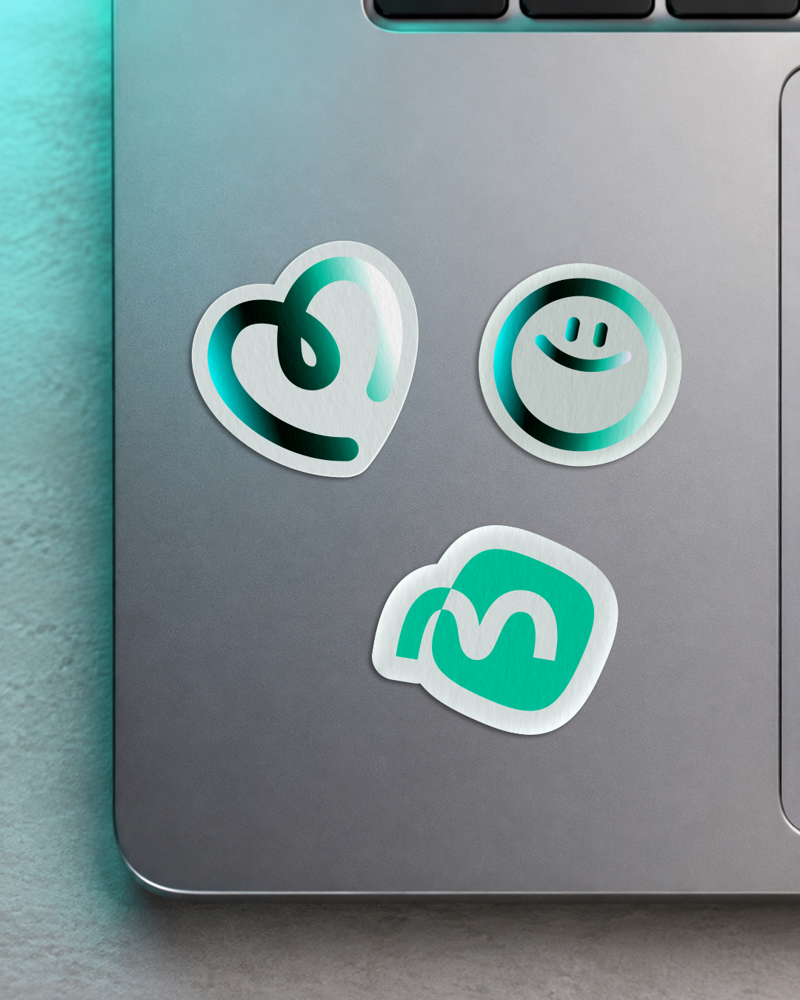
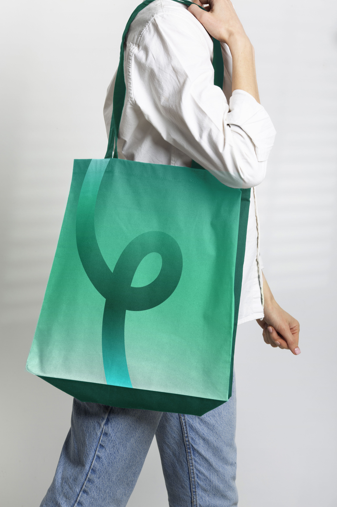
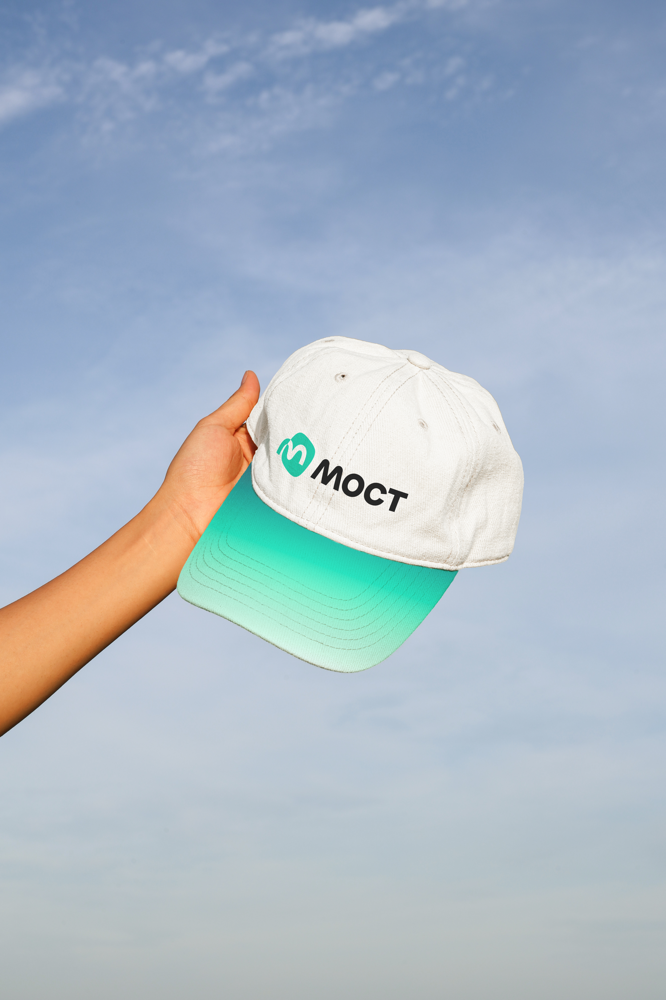
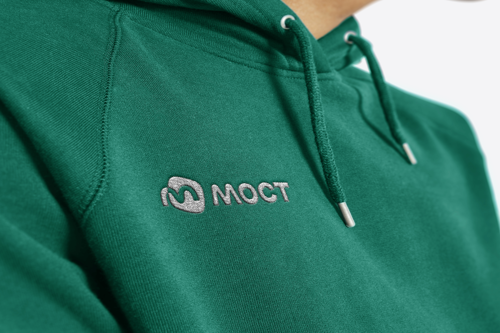
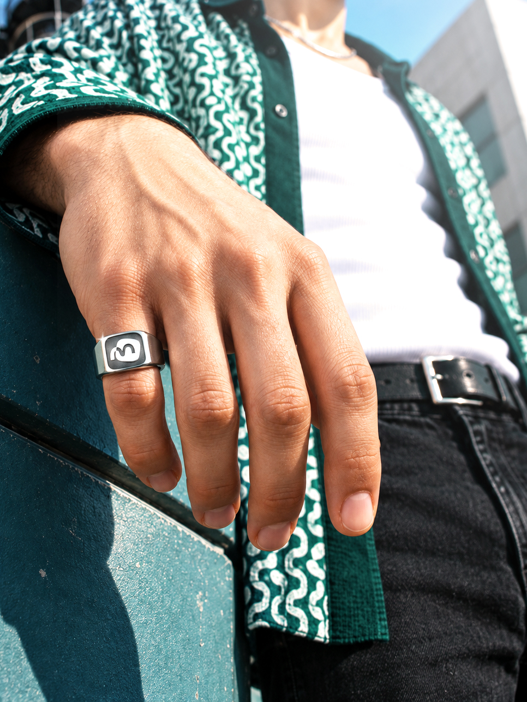

Мост
МОСТ — цифровой сервис, который объединяет общение и повседневные задачи внутри одной системы.
В основе проекта — проблема постоянного переключения между приложениями. Сообщения приходят в разные мессенджееры, покупки совершаются в отдельных сервисах, а для каждого действия приходится открывать новое приложение. МОСТ объединяет чаты из разных мессенджеров в одном интерфейсе: сообщения можно читать и отправлять без постоянного переключения между сервисами. Внутри приложения также работает маркетплейс с возможностью совершать и оплачивать покупки.
Название МОСТ отражает принцип работы продукта. Как физический мост соединяет разные точки, сервис становится связующим звеном между людьми, мессенджерами и повседневными цифровыми задачами.
Характер айдентики строится на сочетании технологичности и дружелюбия. Современная типографика, насыщенный цвет, динамичный ракурс и пластичная графика формируют бренд, говорящий со своей аудиторией понятным языком.





